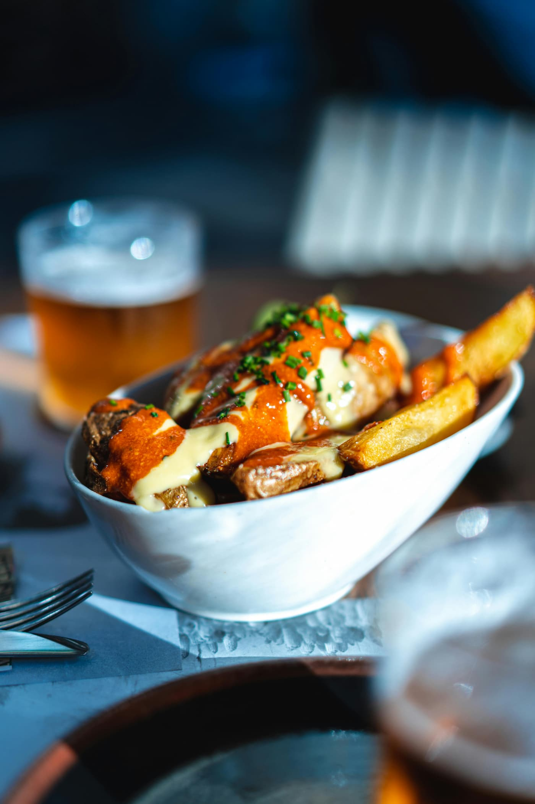
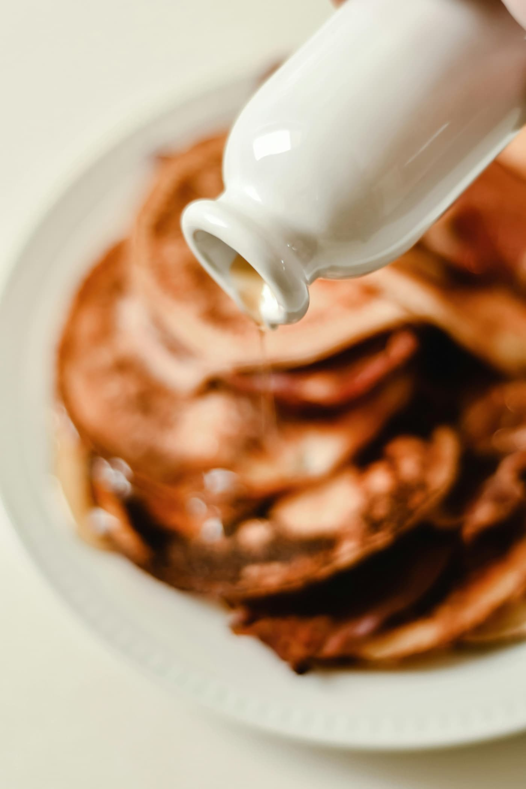
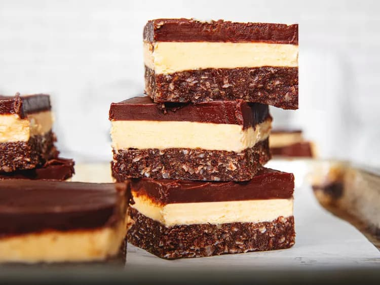

Poutine
Poutine is one of Canada's most famous dishes. It is made with french fries, gravy, and cheese curds.
Canada is a multicultural country where people from many backgrounds live together. Canadian culture is influenced by Indigenous peoples, British traditions, French heritage, and immigrants from around the world.

Poutine is one of Canada's most famous dishes. It is made with french fries, gravy, and cheese curds.

Canada is famous for producing maple syrup, which is often enjoyed with pancakes and desserts.

Nanaimo bars are a popular no-bake dessert that originated in British Columbia.
“Canada celebrates diversity through food, festivals, and traditions.”